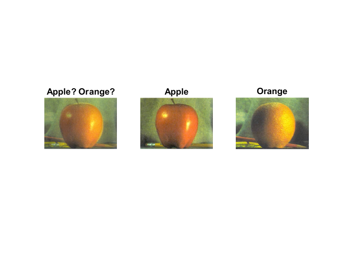

Contents
Codes for AUT-Multimedia 2016 Course
Lecture 3: Introduction to Images Processing: Image Blending
Taught by: Nima Mahmoudi
This code is released under the GPLv3 license for non-commercial use only. For other types of license please contact me.
clc, clear all, close all;
Initiating the file names and Reading Images
% we read images using imread, just give a file path % paths could be absolute or relative apple = imread('apple.jpg'); orange = imread('orange.jpg');
Images are read in uint8 format by default. the main reason I guess is that it is quiet faster. Here we convert them to double for simpler calculations (like rounding problems and weight).
% convert to double type apple = double(apple); orange = double(orange); % NOTE: since we didn't use im2double, elements are in [0,255] % So to show or write it later, we need to convert back. % In this example image sizes should be the same, so we check them using % assert, please check MATLAB help for assirt, error and warning commands. assert(isequal(size(apple), size(orange)), 'Sizes do not match!'); % get Image dimensions, we will need it later height = size(apple, 1); width = size(apple, 2); channel = size(apple, 3);
Blending Images using For-Loops
Imagine we forgot to initialize the size blendingImg = zeros(height, width, channel);
% Here we will blend images by just averaging. % First, will just use for loops. let's see how much it takes. disp('Blending Images using for loops...'); tic; for i = 1:height for j = 1:width for k = 1:channel blendingImg(i, j, k) = (apple(i, j, k) + orange(i, j, k)) / 2; end end end toc
Blending Images using for loops... Elapsed time is 0.201364 seconds.
Blending Images using vectorized implementations
disp('Blending Images using vectorized implementation...');
tic;
blendingImg2 = (apple + orange) / 2;
toc
Blending Images using vectorized implementation... Elapsed time is 0.001544 seconds.
Showing the results
figure(1); subplot(1, 3, 1); imshow(uint8(blendingImg2)); title('Apple? Orange?'); subplot(1, 3, 2); imshow(uint8(apple)); title('Apple'); subplot(1, 3, 3); imshow(uint8(orange)); title('Orange');